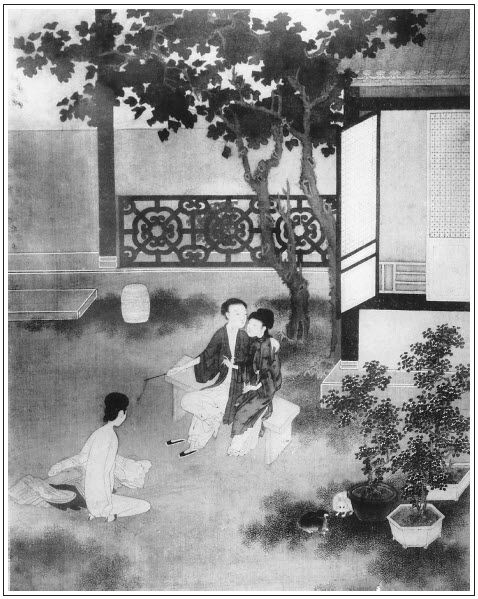

張回此回寫桂姐在院中，純是寫西門。見得才遇金蓮，便娶玉樓，才有春梅，又迷桂姐。紛紛浪蝶，無一底止，必至死而後已也。
寫金蓮受辱處，是作者特地示人處寵榮之後，不可矜驕也。見得如西門之於金蓮，可謂寵愛已極：可必其無《白頭吟》者矣。乃一挫雪娥，便遭毒手，雖狡如金蓮，猶使從前一場恩愛盡付流水。寵榮之不可常恃如此。
寫辱金蓮，兩次必用春梅解，則春梅之寵，不言可知。文字「寫一是二」之法也。
寫琴童一事，既為受辱作由，又將武大的心事，提到西門心中一照。真見得人情惟知損人益己，不知將人比我，故為惡不止，而又為敬濟後文作一引也。
寫玉樓解處，將月娘偏愛金蓮為金蓮牢籠處，一語皆見。而西門以春梅言自解，又見美色可畏，不迷於此，必迷於彼。而桂姐激西門剪髮，直照嬌兒出門。且見西門慶為色所迷，夢魂顛倒，桂姐亦有勝寵難消之事，又早為丁二官、王三官諸回伏案也。
寫受辱處，足令武大哥少舒前憤，亦作者特特為《水滸》又翻一案也。否則比處即出瓶兒，文字如走馬看花，有何趣味？且又不見金蓮行徑，而春梅寵遇，亦不能出也。
寫月娘處，純用隱筆也，何則？夫劉理星本為金蓮受辱後結此一筆，為後文固寵張本。蓋後文若無此一番作地於前，則私敬濟時，豈無一消息吐露，而乃嚴密如是，必待西門死後方知哉？惟有此一番，則西門心愈迷，金蓮膽愈大，而無人能動之，故必著此一著也。而又先受辱兩番，見非月娘叫劉婆子來引出理星，安至金蓮肆至不能治？然則引敬濟入室，猶是第二錯著，其害顯，人人看得出。而叫劉婆子為第一錯著，其害深，人卻看不出。寫盡無知愚婦人壞盡天下事也。不然，豈一琴童便哄然入西門之耳，而敬濟乃風紋不動哉？西門之迷，或未必儘是理星之祟，然有此一番，便是罪案。是知金蓮之罪，月娘成其始終也。理星其始，敬濟其終乎？月娘獨於桂姐最熱，便伏「認女」一節。
此回兩笑話將桂姐、伯爵兩人一描，真是一般的伎倆身份。
此回單照一回寫十兄弟身份，並三回「私挑」處，對針地步也。
詩曰：
可憐獨立樹，枝輕根亦搖。
雖為露所浥，復為風所飄。張夾上解，比也。
錦衾襞不開，端坐夜及朝。
是妾愁成瘦，非君重細腰。張夾下解，賦也。

話說西門慶在院中貪戀桂姐姿色，繡旁元不及情。約半月不曾來家。吳月娘使小廝拿馬接了數次，張夾先寫月娘作引。李家把西門慶衣帽都藏過，不放他起身。丟的家中這些婦人都閑靜了。別人猶可，惟有潘金蓮這婦人，青春未及三十歲，慾火難禁一丈高。每日打扮的粉妝玉琢，皓齒朱唇，無日不在大門首倚門而望，張夾與桂姐何異。只等到黃昏。到晚來歸入房中，粲枕孤幃，鳳台無伴，睡不著，走來花園中，款步花苔。看見那月洋水底，便疑西門慶情性難拿；偶遇著玳瑁貓兒交歡，越引逗的他芳心迷亂。當時玉樓帶來一個小廝，名喚琴童，年約十六歲，才留起頭髮，生的眉目清秀，乖滑伶俐。繡眉此何物，豈可置之閨人左右？西門慶元自疏略。西門慶教他看管花園，晚夕就在花園門首一間小耳房內安歇。張眉大書西門之罪為後月娘縱敬濟一影。金蓮和玉樓白日裡常在花園亭子上一處做針指或下棋。這小廝專一獻小慇勤，繡旁便非蠢人。張夾與金蓮伎倆相同。常觀見西門慶來，就先來告報。張夾為上文下註腳，非此重寫也。以此婦人喜他，常叫他入房，賞酒與他吃。兩個朝朝暮暮，眉來眼去，都有意了。張夾偏不就寫如何，偏又將下文一頓，文字頓挫之妙。
不想到了七月，西門慶生日將近。吳月娘見西門慶留戀煙花，因使玳安拿馬去接。這潘金蓮暗暗修了一柬帖，交付玳安，教：「悄悄遞與你爹，說五娘請爹早些家去罷。」這玳安兒一直騎馬到李家，只見應伯爵、謝希大、祝實念，孫寡嘴，常峙節眾人，正在那裡伴著西門慶，摟著粉頭歡樂飲酒。西門慶看見玳安來到，便問：「你來怎麼？家中沒事？」玳安道：「家中沒事。」西門慶道：「前邊各項銀子，叫傅二叔討討，等我到家算帳。」繡旁財主口角。玳安道：「這兩日傅二叔討了許多，等爹到家上帳。」繡眉沒要沒緊，俱文人玩世心思所寄。西門慶道：「你桂姨那一套衣服，繡旁大老官口聲。捎來不曾？」玳安道：「已捎在此。」便向氈包內取出一套紅衫藍裙，遞與桂姐。桂姐道了萬福，收了，連忙吩咐下邊，管待玳安酒飯。那小廝吃了酒飯，復走來上邊伺候。悄悄向西門慶耳邊說道：「五娘使我捎了個帖兒在此。請爹早些家去。」西門慶才待用手去接，早被李桂姐看見，只道是西門慶那個表子寄來的情書，張旁處處以此等罵之。一手撾過來，拆開觀看，卻是一幅回文錦箋，上寫著幾行墨跡。桂姐遞與祝實念，張夾所以有此名者，殆單謂此回文內回也然則引回文已在第一有矣。教念與他聽。這祝實念見上面寫詞一首，名《落梅風》，念道：
黃昏想，白日思，盼殺人多情不至。因他為他憔悴死，可憐也繡衾獨自！
燈將殘，人睡也，空留得半窗明月。眠心硬，渾似鐵，這淒涼怎捱今夜？
下書：「愛妾潘六兒拜。」那桂姐聽畢，撇了酒席，走入房中，倒在床上，面朝裡邊睡了。繡旁好做作。西門慶見桂姐惱了，把帖子扯的稀爛，眾人前把玳安踢了兩腳。繡旁著鬼。請桂姐兩遍不來，慌的西門慶親自進房，抱出他來，說道：「吩咐帶馬回去，家中那個淫婦使你來，我這一到家，都打個臭死！」張眉又直渡下文受辱。張夾反映金蓮、玉樓文中，不越月皆有冷暖之異。總見西門一味浮薄，轉眼無情也。玳安只得含淚回家。西門慶道：「桂姐，你休惱，這帖子不是別人的，乃是我第五個小妾寄來，請我到家有些事兒計較，再無別故。」祝實念在旁戲道：「桂姐，你休聽他哄你哩！這個潘六兒乃是那邊院裡新敘的一個表子，生的一表人物。張夾又早為瓶月兒遙兒一照，照矣。你休放他去。」西門慶笑趕著打，說道：「你這賤天殺的，單管弄死了人，緊著他恁麻犯人，你又胡說。」繡眉佯嗔故惱，冷幫熱襯，哄然一堂之上，彷彿如睹。李桂卿道：張夾夾寫桂卿。「姐夫差了，既然家中有人拘管，就不消梳籠人家粉頭，自守著家裡的便了。繡眉杜卿又老著臉兒說正經話，妙甚！才相伴了多少時，便就要拋離了去。」繡旁好寬皮散。張夾步步貶金蓮如同類，因知寫桂姐，為特犯金蓮也。應伯爵插口道：「說的有理。你兩人都依我，大官人也不消家去，桂姐也不必惱。今日說過，那個再恁，每人罰二兩銀子，買酒咱大家吃。」張夾即渡下。於是西門慶把桂姐摟在懷中陪笑，一遞一口兒飲酒。少傾，拿了七鍾茶來，馨香可掬，每人面前一盞。應伯爵道：「我有個曲兒，單道這茶好處：
[朝天子]這細茶的嫩芽，生長在春風下。不揪不採葉兒楂，但煮著顏色大。絕品清奇，難描難畫。口裡兒常時呷，醉了時想他，醒來時愛他。繡眉雙關得妙。原來一簍兒千金價。」張夾點明正西門之文，寫愚。
謝希大笑道：「大官人使錢費物，不圖這『一摟兒』，繡旁收科。卻圖些甚的？如今每人有詞的唱詞，不會詞，每人說個笑話兒，與桂姐下酒。」就該謝希大先說，因說道：「有一個泥水匠，在院中墁地。老媽兒怠慢了他，他暗把陰溝內堵上塊磚。落後天下雨，積的滿院子都是水。老媽慌了，尋的他來，多與他酒飯，還秤了一錢銀子，央他打水平。那泥水匠吃了酒飯，悄悄去陰溝內把那塊磚拿出，那水登時出的罄盡。老媽便問作頭：『此是那裡的病？』泥水匠回道：『這病與你老人家的病一樣，有錢便流，無錢不流。』」張夾寫桂姐之假。桂姐見把他家來傷了，便道：「我也有個笑話，回奉列位。有一孫真人，擺著筵席請人，卻教座下老虎去請。那老虎把客人都路上一個個吃了。真人等至天晚，不見一客到。不一時老虎來，真人便問：『你請的客人都那裡去了？』老虎口吐人言：繡旁俚得妙。『告師父得知，我從來不曉得請人，只會白嚼人。』」張夾寫伯爵等之惡。當下把眾人都傷了。應伯爵道：「可見的俺們只是白嚼，你家孤老就還不起個東道？」於是向頭上撥下一根鬧銀耳斡兒來，重一錢；謝希大一對鍍金網巾圈，秤了秤重九分半；祝實念袖中掏出一方舊汗巾兒，算二百文長錢；孫寡嘴腰間解下一條白布裙，繡旁此物太醜。當兩壺半酒；常峙節無以為敬，問西門慶借了一錢銀子。張旁故名常峙節，早為做妻一面伏線。都遞與桂卿，置辦東道，請西門慶和桂姐。那桂卿將銀錢都付與保兒，買了一錢豬肉，又宰了一隻雞，自家又陪些小菜兒，繡旁偏周到。安排停當。大盤小碗拿上來，眾人坐下，說了一聲動箸吃時，說時遲，那時快，但見：
人人動嘴，個個低頭。遮天映日，猶如蝗蚋一齊來；擠眼掇肩，好似餓牢才打出。這個搶風膀臂，如經年未見酒和餚；那個連三筷子，成歲不筵與席。一個汗流滿面，卻似與雞骨禿有冤仇；一個油抹唇邊，把豬毛皮連唾咽。吃片時，杯盤狼藉；啖頃刻，箸子縱橫。這個稱為食王元帥，那個號作淨盤將軍。酒壺番曬又重斟，盤饌已無還去探。
正是：
珍羞百味片時休，果然都送入五臟廟。繡眉寫得盡情痛快，此風雖文人不免，何況伯爵一輩。
當下眾人吃得個淨光王佛。西門慶與桂姐吃不上兩鍾酒，揀了些菜蔬，又被這夥人吃去了。那日把席上椅子坐折了兩張，前邊跟馬的小廝，不得上來掉嘴吃，把門前供養的土地翻倒來，便剌了一泡え谷都的熱屎。繡眉院中實有此景，非點綴也。臨出門來，孫寡嘴把李家明間內供養的鍍金銅佛，塞在褲腰裡；應伯爵推斗桂姐親嘴，把頭上金琢針兒戲了；謝希大把西門慶川扇兒藏了；祝實念走到桂卿房裡照面，溜了他一面水銀鏡子。常峙節借的西門慶一錢銀子，競是寫在嫖賬上了。張夾以上方將十兄弟身份用力一描，為「熱結」作照應也。原來這起人，只伴著西門慶玩耍，好不快活。有詩為證：
工妍掩袖媚如猱，乘興閒來可暫留。
若要死貪無厭足，家中金鑰教誰收？
按下眾人簇擁著西門慶飲酒不題。單表玳安回馬到家，吳月娘和孟玉樓、潘金蓮正在房坐的，見了便問玳安：「你去接爹來了不曾？」玳安哭的兩眼紅紅的，說道：「被爹踢罵了小的來了。爹說那個再使人接，來家都要罵。」月娘便道：「你看恁不合理，不來便了，如何又罵小廝？」孟玉樓道：「你踢將小廝便罷了，如何連俺們都罵將來？」潘金蓮道：「十個九個院中淫婦，和你有甚情實！常言說的好：船載的金銀，填不滿煙花寨。」金蓮只知說出來，不防李嬌兒見玳安自院中來家，便走來窗下潛聽。見金蓮罵他家千淫婦萬淫婦，暗暗懷恨在心。從此二人結仇，張夾未入私僕，先安敗露之因，此謂之預補法。不在話下。正是：
甜言美語三冬暖，惡語傷人六月寒。
不說李嬌兒與潘金蓮結仇。單表金蓮歸到房中，捱一刻似三秋，盼一時如半夏。知道西門慶不來家，把兩個丫頭打發睡了，推往花園中遊玩，將琴童叫進房與他酒吃。把小廝灌醉了，繡眉琴童何修而得此？為之不平。掩上房門，褪衣解帶，兩個就干做一處。但見：
一個不顧綱常貴賤，一個那分上下高低。一個色膽歪邪，管甚丈夫利害；一個淫心蕩漾，縱他律法明條。百花園內，翻為快活排場；主母房中，變作行樂世界。霎時一滴驢精髓，繡旁不忿語。傾在金蓮玉體中。
自此為始，每夜婦人便叫琴童進房如此。未到天明，就打發出來。背地把金裹頭簪子兩三根帶在頭上，又把裙邊帶的錦香囊葫蘆兒也與了他。豈知這小廝不守本分，常常和同行小廝街上吃酒耍錢，頗露機關。常言：若要不知，除非莫為。張夾二語是一部的金鑰也。有一日，風聲吹到孫雪娥、李嬌兒耳朵內，說道：「賊淫婦，往常假撇清，如何今日也做出來了？」齊來告月娘。月娘再三不信，繡眉月娘非不信，只一味解紛息爭耳。說道：張夾寫月娘偏愛。「不爭你們和他合氣，惹的孟三姐不怪？只說你們擠撮他的小廝。」說的二人無言而退。落後婦人夜間和小廝在房中行事，忘記關廚房門，不想被丫頭秋菊出來淨手，看見了。次日傳與後邊小玉，小玉對雪娥說。雪娥同李嬌兒又來告訴月娘如此這般：「他屋裡丫頭親口說出來，又不是俺們葬送他。大娘不說，俺們對他爹說。若是饒了這個淫婦，非除饒了蠍子！」
此時正值七月二十七日，張夾未娶金蓮，西門生日矣。今未幾又是生日，然則已一年乎？總是故為重疊，要寫得若明若晦。一者見韶華迅速，二者見西門在醉夢，三者明其為寓言也。西門慶從院中來家上壽。月娘道：「他才來家，又是他好日子，你們不依我，只顧說去！等他反亂將起來，我不管你。」張夾總是偏愛。二人不聽月娘，約的西門慶進入房中，齊來告訴金蓮在家怎的養小廝一節。這西門慶不聽萬事皆休，聽了怒從心上起，惡向膽邊生。張夾難道武大是木頭？走到前邊坐下，一片聲叫琴童兒。早有人報與潘金蓮。金蓮慌了手腳，使春梅忙叫小廝到房中，張夾百忙裡寫春梅，妙絕。囑咐千萬不要說出來，把頭上簪子都拿過來收了。著了慌，就忘解了香囊葫蘆下來。繡旁有波瀾。張夾偏析到險處方收，文字起花樣也。被西門慶叫到前廳跪下，吩咐三四個小廝，選大板子伺候。西門慶道：「賊奴才，你知罪麼？」那琴童半日不敢言語。西門慶令左右：「撥下他簪子來，我瞧！」見沒了簪子，因問：「你戴的金裹頭銀簪子，往那裡去了？」琴童道：「小的並沒甚銀簪子。」西門慶道：「奴才還搗鬼！與我旋剝了衣服，拿板子打！」當下兩三個小廝扶侍一個，剝去他衣服，扯了褲子。見他身底下穿著玉色絹縼兒，縼兒帶上露出錦香囊葫蘆兒。西門慶一眼看見，便叫：「拿上來我瞧！」認的是潘金蓮裙邊帶的物件，繡眉偏看見，偏認得，絕有佈景。不覺心中大怒，張夾比鄆哥何如？甚矣，捉姦日忠恕之難也。就問他：「此物從那裡得來？你實說是誰與你的？」諕的小廝半日開口不得，說道：「這是小的某日打掃花園，在花園內拾的。並不曾有人與我。」西門慶越怒，切齒喝令：「與我捆起來著實打！」當下把琴童繃子繃著，打了三十大棍，打得皮開肉綻，鮮血順腿淋漓。又叫來保：「把奴才兩個鬢毛與我撏了！趕將出去，再不許進門！」繡眉不待審問的確，竟自打逐，似暴燥，又似隱忍，妙得其情。那琴童磕了頭，哭哭啼啼出門去了。張夾總寫西門不學無術處。
潘金蓮在房中聽見，如提冷水盆內一般。不一時，西門慶進房來，嚇的戰戰兢兢，渾身無了脈息，小心在旁扶侍接衣服，張夾比大哥相待如何？被西門慶兜臉一個耳刮子，張夾一緊。把婦人打了一交。吩咐春梅：「把前後角門頂了，不放一個人進來！」拿張小椅兒，坐在院內花架兒底下，取了一根馬鞭子，拿在手裡，喝令：「淫婦，脫了衣裳跪著！」那婦人自知理虧，不敢不跪，真個脫去了上下衣服，跪在面前，低垂粉面，不敢出一聲兒。繡旁便自可憐。西門慶便問：「賊淫婦，你休推夢裡睡裡，奴才我已審問明白，他一一都供出來了。你實說，我不在家，你與他偷了幾遭？」張夾一緩。婦人便哭道：「天那，天那！可不冤屈殺了我罷了！自從你不在家半個來月，奴白日裡只和孟三兒一處做針指，到晚夕早關了房門就睡了。沒勾當，不敢出這角門邊兒來。你不信，只問春梅便了。繡旁好證見。張夾又插入春梅，妙筆。有甚和鹽和醋，他有個不知道的？」因叫春梅：「姐姐你過來，親對你爹說。」西門慶罵道：「賊淫婦！有人說你把頭上金裹頭簪子兩三根都偷與了小廝，你如何不認？」繡旁淺甚。張夾又一緊。婦人道：「就屈殺了奴罷了！是那個不逢好死的嚼舌根的淫婦，嚼他那旺跳身子。見你常時進奴這屋裡來歇，無非都氣不憤，拿這有天沒日頭的事壓枉奴。就是你與的簪子，都有數兒，一五一十都在，你查不是！我平白想起甚麼來與那奴才？張夾一句半截話。好成材的奴才，也不枉說的，恁一個尿不出來的毛奴才，繡旁精卻出來。平空把我篡一篇舌頭！」
西門慶道：「簪子有沒罷了。」張夾又一緩。因向袖中取出那香囊來，說道：「這個是你的物件兒，如何打小廝身底下捏出來？你還口強甚麼？」說著紛紛的惱了，向他白馥馥香肌上，颼的一馬鞭子來，張夾又一緩。打的婦人疼痛難忍，眼噙粉淚，沒口子叫道：「好爹爹，你饒了奴罷！你容奴說便說，不容奴說，你就打死了奴，也只臭爛了這塊地。這個香囊葫蘆兒，你不在家，奴那日同孟三姐在花園裡做生活，因從木香棚下過，帶兒系不牢，就抓落在地，繡旁可可合著，妙。若先關會，便無味矣。我那裡沒尋，誰知這奴才拾了。奴並不曾與他。」繡眉先作萬分不可解之勢，忽一語解之，令讀者怒喜無定。只這一句，就合著琴童供稱一樣的話，又見婦人脫的光赤條條，花朵兒般身子，嬌啼嫩語，跪在地下，那怒氣早已鑽入爪窪國去了，把心已回動了八九分，張夾又一緩。因叫過春梅，摟在懷中，問他：繡旁自尋出路。「淫婦果然與小廝有首尾沒有？你說饒了淫婦，我就饒了罷。」張夾完得好笑，卻又是夾寫春梅之寵。那春梅撒嬌撒癡，坐在西門慶懷裡，說道：「這個，爹你好沒的說！我和娘成日唇不離腮，娘肯與那奴才？張旁又一句半截話。這個都是人氣不憤俺娘兒們，做作出這樣事來。爹，你也要個主張，好把醜名兒頂在頭上，傳出外邊去好聽？」繡旁反把一堆泥，堆在西門慶頭上，巧甚！張夾又寫春梅之才。幾句，把西門慶說的一聲兒沒言語，丟了馬鞭子，一面叫金蓮起來，穿上衣服，繡眉畢竟愛心勝，稍有一絲出脫之路，便出脫之矣。吩咐秋菊看菜兒，放桌兒吃酒。張夾無恥。這婦人滿斟了一杯酒，雙手遞上去，跪在地下，等他鍾兒。張夾不堪，卻為前寵愛處作映。西門慶吩咐道：「我今日饒了你。我若但凡不在家，要你洗心改正，早關了門戶，不許你胡思亂想。我若知道，並不饒你！」婦人道：「你吩咐，奴知道了。」繡眉大家都含糊罷了，妙。又與西門慶磕了四個頭，方才安坐兒，在旁陪坐飲酒。張夾無恥。潘金蓮平日被西門慶寵的狂了，今日討這場羞辱在身上。正是：
為人莫作婦人身，百年苦樂由他人。
當下西門慶正在金蓮房中飲酒，忽小廝打門，說：「前邊有吳大舅、吳二舅、傅夥計、女兒、女婿，眾親戚送禮來祝壽。」方才撇了金蓮，出前邊陪待賓客。那時應伯爵、謝希大眾人都有人情，院中李桂姐家亦使保兒送禮來。繡旁伏。西門慶前邊亂著收人家禮物，發柬請人，不在話下。張夾妙絕，此文字脫卸處也。不然在金蓮房中宿，固非情理。面即出，亦非情理。今借生日一出，妙絕。
且說孟玉樓打聽金蓮受辱，約的西門慶不在房裡，瞞著李嬌兒、孫雪娥，走來看望。見金蓮睡在床上，因問道：「六姐，你端的怎麼緣故？告我說則個。」那金蓮滿眼流淚哭道：「三姐，你看小淫婦，今日在背地裡白唆調漢子，打了我恁一頓。我到明日，和這兩個淫婦冤仇結得有海深。」繡眉不怨自家差錯，只記恨別人，婦人腸肚，大率類此。玉樓道：「你便與他有瑕玷，如何做作著把我的小廝弄出去了？六姐，你休煩惱，莫不漢子就不聽俺們說句話兒？若明日他不進我房裡來便罷，但到我房裡來，等我慢慢勸他。」金蓮道：「多謝姐姐費心。」一面叫春梅看茶來吃。坐著說了回話，張夾寫玉樓、金蓮交好，在此處起。玉樓告回房去了。至晚，西門慶因上房吳大妗子來了，走到玉樓房中宿歇。玉樓因說道：「你休枉了六姐心，六姐並無此事，都是日前和李嬌兒、孫雪娥兩個有言語，平白把我的小廝扎罰了。你不問個青紅皂白，就把他屈了，卻不難為他了！我就替他賭個大誓，若果有此事，大姐姐有個不先說的？」繡旁解亦巧。張夾映出月娘好好先生，又偏愛金蓮也。西門慶道：「我問春梅，他也是這般說。」繡旁呆人可笑。玉樓道：「他今在房中不好哩，你不去看他看去？」西門慶道：「我知道，明日到他房中去。」當晚無話。
到第二日，西門慶正生日。有周守備、夏提刑、張團練、吳大舅許多官客飲酒，拿轎子接了李桂姐張夾插入桂姐，上數人皆為桂姐做楔子也。並兩個唱的，唱了一日。李嬌兒見他侄女兒來，引著拜見月娘眾人，繡旁宛然。在上房裡坐喫茶。請潘金蓮見，連使丫頭請了兩遍，金蓮不出來，只說心中不好。到晚夕，桂姐臨家去，拜辭月娘。月娘與他一件雲絹比甲兒、汗巾花翠之類，張夾伏「認女」一線，又見月娘好好先生處，每不耐看他也。同李嬌兒送出門首。桂姐又親自到金蓮花園角門首：「好歹見見五娘。」繡旁定要見，促恰之甚。張夾桂姐身份中有嬌兒也。那金蓮聽見他來，使春梅把角門關得鐵桶相似，說道：「娘吩咐，我不敢開。」這花娘遂羞訕滿面而回，繡旁亦自取。不題。
單表西門慶至晚進入金蓮房內來，那金蓮把雲鬢不整，花容倦淡，繡旁四字可憐。迎接進房，替他脫衣解帶，伺候茶湯腳水，百般慇勤扶侍。到夜裡枕席歡娛，屈身忍辱，無所不至，說道：「我的哥哥，這一家誰是疼你的？都是露水夫妻，再醮貨兒。張夾自己是乎？惟有奴知道你的心，你知道奴的意。旁人見你這般疼奴，在奴身邊的多，都氣不憤，背地裡駕舌頭，在你跟前唆調。我的傻冤家！你想起甚麼來，中人的拖刀之計，把你心愛的人兒這等下無情的折挫！張夾比武大的藥更狠。常言道：家雞打的團團轉，野雞打的貼天飛。你就把奴打死了，也只在這屋裡。繡眉百分小心，只不放倒架子。然而思悲語苦。張夾作者至此，蓋放手寫色的圈子也。就是前日你在院裡踢罵了小廝來，早是有大姐姐、孟三姐在跟前，我自不是說了一聲，恐怕他家粉頭掏淥壞了你身子，院中唱的一味愛錢，有甚情節？誰人疼你？誰知被有心的人聽見，兩個背地做成一幫兒算計我。自古人害人不死，天害人才害死了。往後久而自明，只要你與奴做個主兒便了。」幾句把西門慶窩盤住了。是夜與他淫慾無度。張夾又頓住。
過了幾日，西門慶備馬，玳安、平安兩個跟隨，往院中來。卻說李桂姐正打扮著陪人坐的，聽見他來，連忙走進房去，洗了濃妝，除了簪環，倒在床上裹衾而臥。繡眉娼家假態，曲曲寫出。張夾又是一樣圈子。西門慶走到，坐了半日，老媽才出來，道了萬福，讓西門慶坐下，問道：「怎的姐夫連日不進來走走？」西門慶道：「正是因賤日窮冗，家中無人。」虔婆道：「姐兒那日打攪。」西門慶道：「怎的那日桂卿不來走走？」虔婆道：「桂卿不在家，被客人接去店裡。這幾日還不放了來。」說了半日話，才拿茶來陪著吃了。張夾冷淡的妙。西門慶便問：「怎的不見桂姐？」虔婆道：「姐夫還不知哩，小孩兒家，不知怎的，那日著了惱，來家就不好起來，睡倒了。房門兒也不出，直到如今。姐夫好狠心，也不來看看姐兒。」繡眉先冷冷落落，推他開口，方婉婉說入，的是虔婆伎倆。西門慶道：「真個？我通不知。」繡眉難道是假不成？因問：「在那邊房裡？我看看去。」虔婆道：「在他後邊臥房裡睡。」慌忙令丫鬟掀簾子。西門慶走到他房中，只見粉頭烏雲散亂，粉面慵妝，裹被坐在床上，面朝裡，見了西門慶，不動一動兒。繡旁畫。西門慶道：「你那日來家，怎的不好？」也不答應。繡旁畫。又問：「你著了誰人惱，你告我說。」問了半日，那桂姐方開言說道：「左右是你家五娘子。你家中既有恁好的迎歡賣俏，繡旁深譏。又來稀罕俺們這樣淫婦做甚麼？張夾寫金蓮每每不嫌唐突。蓋深惡金蓮也。俺們雖是門戶中出身，蹺起腳兒，比外邊良人家不成的貨色兒高好些！繡旁深譏。我前日又不是供唱，我也送人情去。大娘到見我甚是親熱，張夾又為「認女」一照。又與我許多花翠衣服。待要不請他見，又說俺院中沒禮法。聞說你家有五娘子，當即請他拜見，又不出來。家來同俺姑娘又辭他去，他使丫頭把房門關了。端的好不識人敬重！」西門慶道：「你到休怪他。他那日本等心中不自在，他若好時，有個不出來見你的？這個淫婦，我幾次因他咬群兒，口嘴傷人，也要打他哩！」桂姐反手向西門慶臉上一掃，說道：「沒羞的哥兒，你就打他？」繡旁激得妙。西門慶道：「你還不知我手段，除了俺家房下，家中這幾個老婆丫頭，但打起來也不善，著緊二三十馬鞭子還打不下來。好不好還把頭髮都剪了。」張夾惹嘲。桂姐道：「我見砍頭的，沒見吹嘴的，你打三個官兒，唱兩個喏，誰見來？你若有本事，到家裡只剪下一柳子頭髮，拿來我瞧，我方信你是本司三院有名的子弟。」繡眉既激之以怒，又歆之以名，桂姐亦是辣手。西門慶道：「你敢與我排手？」繡旁呆甚。那桂姐道：「我和你排一百個手。」當日西門慶在院中歇了一夜，到次日黃昏時分，辭了桂姐，上馬回家。桂姐道：「哥兒，你這一去，沒有這物件兒，看你拿甚嘴臉見我！」
這西門慶吃他激怒了幾句話，張夾總寫西門之愚，愚得好笑。歸家已是酒酣，不往別房裡去，逕到潘金蓮房內來。婦人見他有酒了，加意用心伏侍。問他酒飯都不吃。吩咐春梅把床上枕席拭抹乾淨，帶上門出去。他便坐在床上，令婦人脫靴。那婦人不敢不脫。須臾，脫了靴，打發他上床。西門慶且不睡，坐在一隻枕頭上，張夾寫生。令婦人褪了衣服，地下跪著。繡眉先尋事，起水頭，寫得肺肝如見。張夾總將上文一一付之流水矣。那婦人嚇的捏兩把汗，又不知因為甚麼，於是跪在地下，柔聲痛哭道：「我的爹爹！你透與奴個伶俐說話，奴死也甘心。饒奴終日恁提心吊膽，陪著一千個小心，還投不著你的機會，只拿鈍刀子鋸處我，張夾抑金蓮至此極矣。教奴怎生吃受？」西門慶罵道：「賤淫婦，你真個不脫衣裳，我就沒好意了！」因叫春梅：「門背後有馬鞭子，與我取了來！」繡眉割所愛以奉所愛，似乎近愚，然亦前氣未消盡故耳。
那春梅只顧不進房來，叫了半日，才慢條廝禮繡旁一味恃寵。推開房門進來。張夾又夾入春梅。看見婦人跪在床地平上，向燈前倒著桌兒下，由西門慶使他，只不動身。張夾寫春梅。婦人叫道：「春梅，我的姐姐，你救我救兒，他如今要打我。」西門慶道：「小油嘴兒，你不要管他。你只遞馬鞭子與我打這淫婦。」繡旁勢緊語松。春梅道：「爹，你怎的恁沒羞！娘干壞了你甚麼事兒？你信淫婦言語，平地裡起風波，要便搜尋娘？還教人和你一心一計哩！你教人有那眼兒看得上你！倒是我不依你。」拽上房門，走在前邊去了。張夾寫春梅。那西門慶無法可處，倒呵呵笑了，繡旁過下無痕。向金蓮道：「我且不打你。你上來，我問你要樁物兒，你與我不與我？」繡眉到此方入題，西門慶亦費許多曲折矣。婦人道：「好親親，奴一身骨朵肉兒都屬了你，繡旁情急語。隨要甚麼，奴無有不依隨的。不知你心裡要甚麼兒？」西門慶道：「我要你頂上一柳兒好頭髮。」張夾一逼。婦人道：「好心肝！張夾情極處，卻是軟打動。寫得越越可畏。奴身上隨你怎的揀著燒遍了也依，這個剪頭髮卻依不的，張夾又遠。可不嚇死了我罷了。奴出娘胞兒，活了二十六歲，從沒幹這營生。打緊我頂上這頭髮近來又脫了好些，繡眉金蓮此時情亦苦矣。只當可憐見我罷。」西門慶道：「你只怪我惱，我說的你就不依。」婦人道：「我不依你，再依誰？」因問：「你實對奴說，要奴這頭髮做甚麼？」西門慶道：「我要做網巾。」婦人道：「你要做網巾，奴就與你做，休要拿與淫婦，教他好壓鎮我。」西門慶道：「我不與人便了，要你發兒做頂線兒。」婦人道：「你既要做頂線，待奴剪與你。」當下婦人分開頭髮，西門慶拿剪刀，張夾如畫在此，無情亦在此。寫得西門越越可畏，卻其實可笑。按婦人頂上，齊臻臻剪下一大柳來，用紙包放在順袋內。繡眉燒琴煮鶴且不可，況剪美人之發乎！剪而相贈猶不可，況因氣而相逼乎！為之痛惜！婦人便倒在西門慶懷中，嬌聲哭道：「奴凡事依你，只願你休忘了心腸，隨你前邊和人好，只休拋閃了奴家！」是夜與他歡會異常。
到次日，西門慶起身，婦人打發他吃了飯，出門騎馬，逕到院裡。桂姐便問：「你剪的他頭髮在那裡？」西門慶道：「有，在此。」便向茄袋內取出，遞與桂姐。打開看，果然黑油也一般好頭髮，繡旁襯出。就收在袖中。西門慶道：「你看了還與我，他昨日為剪這頭髮，好不煩難，吃我變了臉惱了，他才容我剪下這一柳子來。我哄他，只說要做網巾頂線兒，逕拿進來與你瞧。可見我不失信。」桂姐道：「甚麼稀罕貨，慌的恁個腔兒！等你家去，我還與你。比是你恁怕他，就不消剪他的來了。」繡眉拿來火熱，卻又搶白得冰冷，桂姐利嘴可畏。張夾到底連好也未討得。然則一桂姐也卉之如掌上矣。色之可畏如此。西門慶笑道：「那裡是怕他！恁說我言語不的了。」桂姐一面叫桂卿陪著他吃酒，走到背地裡，把婦人頭髮早絮在鞋底下，每日踹踏，繡旁寫出噁心。張夾已度下文理星矣。不在話下。卻把西門慶纏住，連過了數日，不放來家。
金蓮自從頭髮剪下之後，覺道心中不快，每日房門不出，茶飯慵餐。吳月娘使小廝請了家中常走看的劉婆子來看視，張夾大書月娘第一件罪案。說：「娘子著了些暗氣，惱在心中，不能回轉，頭疼噁心，飲食不進。」一面打開藥包來，留了兩服黑丸子藥兒：「晚上用薑湯吃。」又說：「我明日叫我老公來，替你老人家看看今歲流年，有災沒災。」金蓮道：「原來你家老公也會算命？」劉婆道：「他雖是個瞽目人，到會兩三樁本事：第一善陰陽算命，與人家禳保；第二會針灸收瘡；第三樁兒不可說，繡旁作聲價。──單管與人家回背。」婦人問道：「怎麼是回背？」劉婆子道：「比如有父子不和，兄弟不睦，繡眉明明要說夫妻，卻從父子、兄弟開科。小人小術何嘗無次第！大妻小妻爭鬥，教了俺老公去說了，替他用鎮物安鎮，畫些符水與他吃了，不消三日，教他父子親熱，兄弟和睦，妻妾不爭。若人家買賣不順溜，田宅不興旺者，繡旁又補出數事，若不為夫妻發者。妙甚！常與人開財門發利市。治病灑掃，禳星告斗都會。張夾一影。因此人都叫他做劉理星。也是一家子，新娶個媳婦兒是小人家女兒，有些手腳兒不穩，常偷盜婆婆家東西往娘家去。丈夫知道，常被責打。俺老公與他回背，畫了一道符，燒灰放在水缸下埋著，閤家大小吃了缸內水，眼看媳婦偷盜，只象沒看見一般。繡眉引不端事作證，諧甚！張夾又一影。又放一件鎮物在枕頭內，男子漢睡了那枕頭，好似手封住了的，再不打他了。」張夾才入正文。那金蓮聽見遂留心，便呼丫頭，打發茶湯點心與劉婆吃。臨去，包了三錢藥錢，另外又秤了五錢，要買紙紮信信物。明日早飯時叫劉瞎來燒神紙。那婆子作辭回家。
到次日，果然大清早晨，領賊瞎逕進大門往裡走。那日西門慶還在院中，看門小廝便問：「瞎子往那裡走？」劉婆道：「今日與裡邊五娘燒紙。」小廝道：「既是與五娘燒紙，老劉你領進去。仔細看狗。」這婆子領定，逕到潘金蓮臥房明間內，等了半日，婦人才出來。瞎子見了禮，坐下。婦人說與他八字，賊瞎用手捏了捏，說道：「娘子庚辰年，庚寅月，乙亥日，己丑時。初八日立春，已交正月算命。依子平正論，娘子這八字，雖故清奇，一生不得夫星濟，子上有些妨礙。乙木生在正月間，亦作身旺論，不克當自焚。又兩重庚金，羊刃大重，夫星難為，克過兩個才好。」婦人道：「已克過了。」賊瞎子道：「娘子這命中，休怪小人說，子平雖取煞印格，只吃了亥中有癸水，丑中又有癸水，水太多了，衝動了只一重巳土，官煞混雜。論來，男人煞重掌威權，女子煞重必刑夫。所以主為人聰明機變，得人之寵。只有一件，今歲流年甲辰，歲運並臨，災殃立至。命中又犯小耗勾絞，兩位星辰打攪，雖不能傷，卻主有比肩不和，小人嘴舌，常沾些啾唧不寧之狀。」張夾寫劉婆遞春之妙，在不言之表。婦人聽了，說道：「累先生仔細用心，與我回背回背。我這裡一兩銀子相謝先生，買一盞茶吃。奴不求別的，只願得小人離退，夫主愛敬便了。」一面轉入房中，拔了兩件首飾遞與賊瞎。賊瞎收入袖中，說道：「既要小人回背，用柳木一塊，刻兩個男女人形，書著娘子與夫主生辰八字，用七七四十九根紅線紮在一處。上用紅紗一片，蒙在男子眼中，用艾塞其心，用針釘其手，下用膠粘其足，暗暗埋在睡的枕頭內。又硃砂書符一道燒灰，暗暗攪茶內。若得夫主吃了茶，到晚夕睡了枕頭，不過三日，自然有驗。」婦人道：「請問先生，這四樁兒是怎的說？」賊瞎道：「好教娘子得知：用紗蒙眼，使夫主見你一似西施嬌艷；用艾塞心，使他心愛到你；用針釘手，隨你怎的不是，使他再不敢動手打你；用膠粘足者，使他再不往那裡胡行。」繡眉事事俱打到婦人心坎上，賊瞎狡甚。婦人聽言，滿心歡喜。當下備了香燭紙馬，替婦人燒了紙。張夾寫金蓮必如此，其惡方稱十全。然又為固寵張本。到次日，使劉婆送了符水鎮物與婦人，如法安頓停當，將符燒灰，頓下好茶，待的西門慶家來，婦人叫春梅遞茶與他吃。到晚夕，與他共枕同床，過了一日兩，兩日三，似水如魚，歡會異常。看觀聽說：但凡大小人家，師尼僧道，乳母牙婆，切記休招惹他，背地什麼事不幹出來？古人有四句格言說得好：
堂前切莫走三婆，後門常鎖莫通和。
院內有井防小口，便是禍少福星多。
文回文禹門云：此一回已將西門慶之粗鄙不堪、凶頑無比，無情無理，糊里糊塗、任性縱情、恃財溺色，寫足十分。可見為之妻妾者，直與豬狗同眠，豺狼共食。
批者總以月娘陰險。試問：遇此頂踵無雅骨，臟腑有別腸，為之妻者，將如此良人何也？其餘李嬌兒、孟玉樓以及孫雪娥、龐春梅，冷眼旁觀，或身受其毒，或心識其狠。視此喜怒無常，反覆不定之丈夫，又當何如也？若使無知，直是一群蠢婦，何足愛惜，若使有知，又是一群苦鬼，有何情趣？男女交合，取其和美，彼此勉強，事過即忘。西門慶欣欣自喜，閱之者亦津津有味。以為有味者，此書中只有一潘金蓮耳。夫金蓮所圖者，亦只此一事耳；觀其不顧性命，毒死本夫；不要臉面，調戲小叔；不管尊卑，私偷琴童；污口亦可，辱身亦可，剪髮亦可，貪得一個挨字。若使西門慶閹割，或因嫖爛掉，金蓮方深拒之不晦，病之不晦詈，手控口咬之不晦，回背雲乎哉！西門所恃者此，金蓮所求者此，奈何閱者亦注意此。而以金蓮自比，致為李桂姐之所嫉所侮也。
按：「批者總以月娘陰撿」，系指張竹坡原批：「西門慶是混帳惡人，吳月娘是奸險好人」